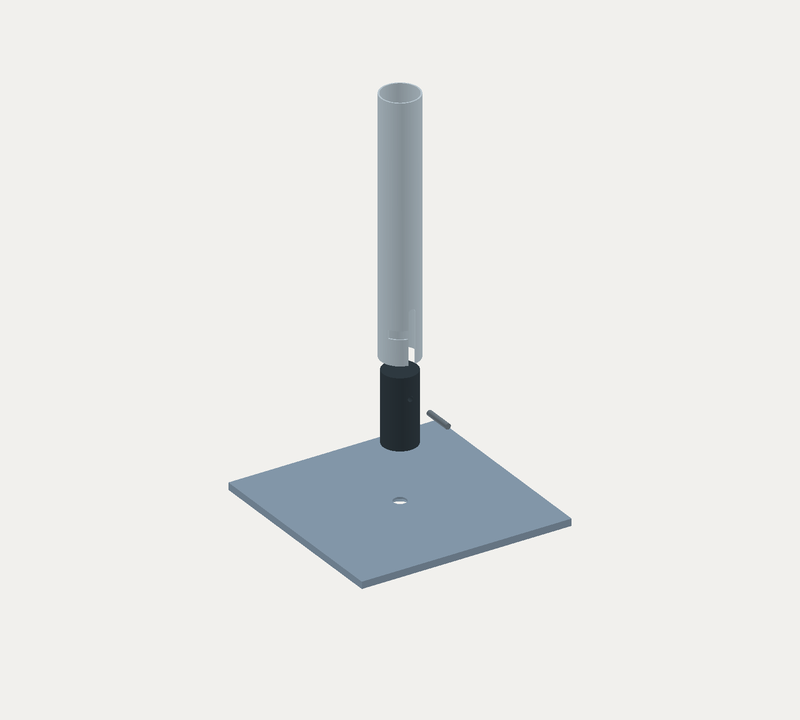

D-V03 · Konzept
Sockel D
 CAD-Ansicht
CAD-AnsichtDie Seite bleibt scrollbar. 3D startet erst auf Wunsch.
Fünf Teile.
Eine Verbindung.
Das Rohr wird auf die massive Aufnahme geschoben und verdreht. Die Schraube sitzt von unten in der Grundplatte.
Nominale Geometrie geprüft. Eine Rückdrehsicherung ist noch nicht nachgewiesen.
D-V03 · Montageprinzip
Schritt für Schritt

CAD-Zielbild · keine KraftsimulationTeile vorbereiten
Die Platte anheben und die fünf Bauteile bereitlegen.
Schrittfolge mit CAD-Zielbildern. Jederzeit pausierbar.
Was dieser Schritt voraussetzt
D-V03 · Arbeitsstand
Vom Teil zum Sockel
Was feststeht, was passt und was vor dem Bauen noch geklärt werden muss.
Die Stückliste
Platte 5 mmDer nächste reale Schritt
- Original vermessen
Rohr, Kopf, Stift und Schlitz mit Messmittel und Bezug erfassen.
Offen · Messprotokoll erforderlich - Bewegung bestätigen
Einführen, Drehen und Rückweg am kalten Original dokumentieren.
Offen · keine Rastung nachgewiesen - Gesamte Fackel beurteilen
Oberen Anschluss, Höhe, Gewicht und Untergrund erfassen. Daraus Lasten und Standprüfung ableiten.
Offen · kein Standnachweis
Bereits geprüft: fünf gültige CAD-Körper, nominale Bodenfreiheit und Bewegungsstichproben. Das ist keine Fertigungs- oder Betriebsfreigabe.
Vollständige Entscheidungskette ↗Budget, noch kein Angebot
- Eigenleistung
- Werkstatt
Grobe Auszahlungsspannen, brutto. Eigenleistung setzt vorhandene Maschinen voraus; eigene Arbeitszeit nicht eingepreist. Keine garantierte Obergrenze.
Berechnung & Annahmen ↗Unterlagen
CAD-BaugruppeSTEP · fünf Teile · D-V03Mechanik & GrenzenSpiel, Kontakt und RückdrehenSpäter: Maße im Browser ausprobieren
Vorgesehen sind temporäre Maßvorschauen mit Rücksetzen und Vergleich. Geänderte Geometrie wird als ungeprüft markiert. Bestehende CAD-Dateien und Nachweise bleiben beim Ausgangsstand.
Noch nicht implementiert. In diesem Entwurf werden ausschließlich vorhandene 5-/8-/9-mm-Ausführungen gewählt.